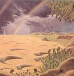

| Artist: | Landing |
| Title: | Brocade |
| Label: | Strange Attractors Audio House SAAH037 |
| Length(s): | 53 minutes |
| Year(s) of release: | 2005 |
| Month of review: | [03/2006] |
| 1) | Loft | 8.14 |
| 2) | Yon | 11.19 |
| 3) | Spiral Arms | 12.43 |
| 4) | How To Be Clear | 4.36 |
| 5) | Music For Three Synthesizers | 17.08 |
Yon is a bit longer, and starts off ambiently. Still, there are also light rhythmic elements, at first extremely light, which does give the music a non-ambientness. Atmosphere is very important, as you can imagine and the band does that well. The guitars can sometimes sound a bit Frippian (as in his soundscapes). Slowly the music gains in volume, and fullness. The final few minutes the keyboards are replaced by noise, but also in a subdued fashion.
Spiral Arms brings the same kind of peace that the other tracks brought, but now played with acoustic guitars. I am reminded of Popol Vuh here, but the electric guitar sound is typical for Fripp. Very pleasant. How To Be Clear is totally different, a thundering track somewhere between La Dusseldorf and U2, honest. The main difference is that the vocals are nowhere near those of Bono. Indeed, the overall Neu! and Dusseldorf influence is very strong here. But anyone could mistake this is for pop/rock music.
Music For Three Synthesizers is the longest track saved for last. There is no hurry here, and there should not be. It floats by easily.